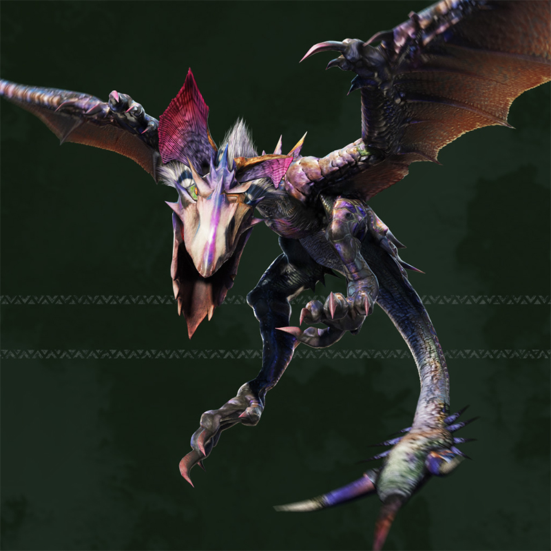

プラグインのslickを使ったスライダー
slickを使ってモンスターハンターのモンスター画像をスライドさせます。
上段は画像ふたつを表示させ、画像データの読み込みも遅延させています。
下段は左右に少し表示させ、仕様上画像データの読み込み方は標準です。
ただし、どちらも画像が表示されるまでリストが非表示になっています。


- 
slickを使ってモンスターハンターのモンスター画像をスライドさせます。
上段は画像ふたつを表示させ、画像データの読み込みも遅延させています。
下段は左右に少し表示させ、仕様上画像データの読み込み方は標準です。
ただし、どちらも画像が表示されるまでリストが非表示になっています。